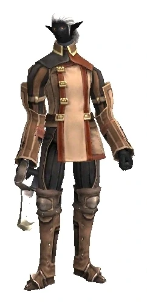

Level 75 reference · Zenith rules
Fomors are the spirits of those who were slain during battle. Fomors look like normal characters with black skin and glowing eyes. Their names usually consist of "Fomor (Job)" example: Fomor Thief.
The Fomors in Dynamis are the corrupted souls of the "multi-national" strike force (although the majority being San d'Orian) known as the Hydra Corps who were transported to the Shrouded Land of Dynamis along with the elite beastmen units -- the Forlorn Vanguard and Dark Kindred.
The Fomors of Tavnazian Archipelago, who are spirits of soldiers slain during the invasion of the Tavnazian Archipelago, do not aggro until you kill up to 5 Fomors, then they will aggro to sound. You can reset hate of Fomors by avenging their deaths from the invasion by killing Orcs, Gigas, and Tauri only found in Tavnazian Archipelago. To check Fomor Hate, talk to Resauchamet in Tavnazian Safehold.
The Fomors in the Near East are the souls of the fallen Ephramadian soldiers in the war between the Kingdom of Ephramad and the Empire of Aht Urhgan long ago. Unlike the Fomors of Tavnazia, they do not possess a type of "Fomor Hate." There are also Fomors in Arrapago Reef that are the souls of those who have fallen in the struggle for the Astral Candescence. They too do not possess any "Fomor hate."
While Fomors and shadows are related in that they are both humanoid undead (and can both be called "dark stalkers"), typically undead because of their spite or through dark rituals, they possess different special attacks and have different appearances. Their relatedness becomes apparent while doing particular quests, especially those of white mage quests, and in Dynamis - Beaucedine, where the Hydra can use both the shadows' and Fomors' TP attacks.
General Information
|
 Image source |


Special Attacks
| Special Abilities | Promathia Areas | Aht Urhgan Areas | ||
| Aegis Schism: Single target Defense Down | ||||
| Barbed Crescent: Single target damage and Accuracy Down, absorbed by Utsusemi | ||||
| Carnal Nightmare: 10' AoE reset TP to 0; Pets in range only experience a partial loss of TP. | ||||
| Dancing Chains: 10' AoE Drown | ||||
| Netherspikes: Cone Attack damage and Bind, absorbed by Utsusemi | ||||
| Foxfire: (1h weapon users - RDM THF PLD BST BRD RNG NIN) Cone Attack physical damage and Stun, absorbed by Utsusemi | ||||
| Grim Halo: (2h weapon users - WAR BLM DRK SAM DRG SMN) 10' AoE heavy physical damage, absorbed by Utsusemi | ||||
| Shackled Fists: (MNK only) Single target damage | ||||
| Note: Notorious Monsters in this family may use all of the above and/or additional unique special abilities. | ||||
Notorious Monsters in Family
| Name | Spawn Information | Level | Zone | Notable Drop(s) |
|---|---|---|---|---|
| Balor | Forced Spawn when a Hume with very high Fomor Hate trades a Fomor Codex to the Stale Draft at (F-5) | 59 | Sacrarium | Swift Belt |
| Caithleann | Forced Spawn when a Mithra with very high Fomor Hate trades a Fomor Codex to the Stale Draft at (F-11) | 59 | Sacrarium | Swift Belt |
| Eba | Possible Timed Spawn around (D-12) to (E-11) on the second map every 21-24 hours | 48 | Phomiuna Aqueducts | Fomor Tunic |
| Indich | Forced Spawn when a Galka with very high Fomor Hate trades a Fomor Codex to the Stale Draft at (G-11) | 59 | Sacrarium | Swift Belt |
| Lobais | Forced Spawn when a Tarutaru with very high Fomor Hate trades a Fomor Codex to the Stale Draft at (H-5) | 59 | Sacrarium | Swift Belt |
| Luaith | Forced Spawn when an Elvaan with very high Fomor Hate trades a Fomor Codex to the Stale Draft at (G-5) | 59 | Sacrarium | Swift Belt |
|
Quest NMs: Arcane Phantasm, , Black Bartholomew, Cutthroat Kabsalah Mission NMs: Jazaraat, Experimental Undead, Ashu Talif Captain Battlefield NMs: None Other NMs: Duendes' Amoroso (Assists: Tres Duendes) | ||||
Monsters in Family

Adapted from Eden Wiki: Category:Fomors · Contributors and history · CC BY-SA 4.0. Revision 3500. Layout, links and optional background text adapted for Zenith.
Articles
- Arcane Phantasm
- Ashu Talif Crew
- Ashu Talif Marine
- Balor
- Black Bartholomew
- Caithleann
- Cutthroat Kabsalah
- Duendes' Amoroso
- Eba
- Ephramadian Shade
- Experimental Undead
- Fallen Imperial Trooper
- Fallen Imperial Wizard
- Fallen Volunteer
- Fir Bholg
- Fomor Bard
- Fomor Beastmaster
- Fomor Black Mage
- Fomor Dark Knight
- Fomor Dragoon
- Fomor Monk
- Fomor Ninja
- Fomor Paladin
- Fomor Ranger
- Fomor Red Mage
- Fomor Samurai
- Fomor Summoner
- Fomor Thief
- Fomor Warrior
- Hammerblow Majanun
- Hydra Bard
- Hydra Beastmaster
- Hydra Black Mage
- Hydra Dark Knight
- Hydra Dragoon
- Hydra Monk
- Hydra Ninja
- Hydra Paladin
- Hydra Ranger
- Hydra Red Mage
- Hydra Samurai
- Hydra Summoner
- Hydra Thief
- Hydra Warrior
- Hydra White Mage
- Indich
- Jazaraat
- Lobais
- Luaith
- Powderkeg Yanadahn
- Prince Luzaf